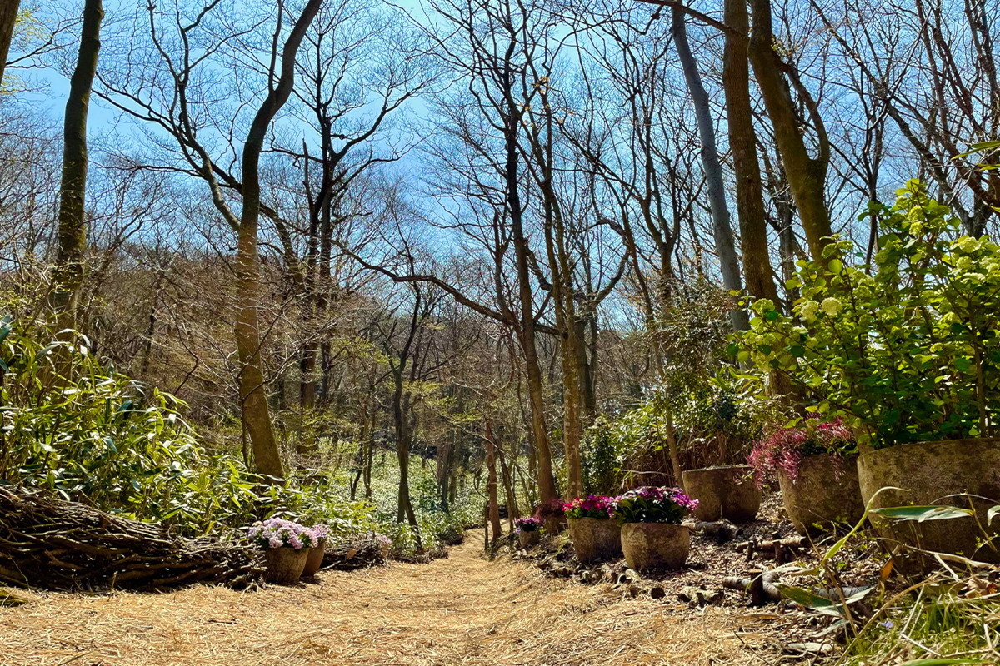
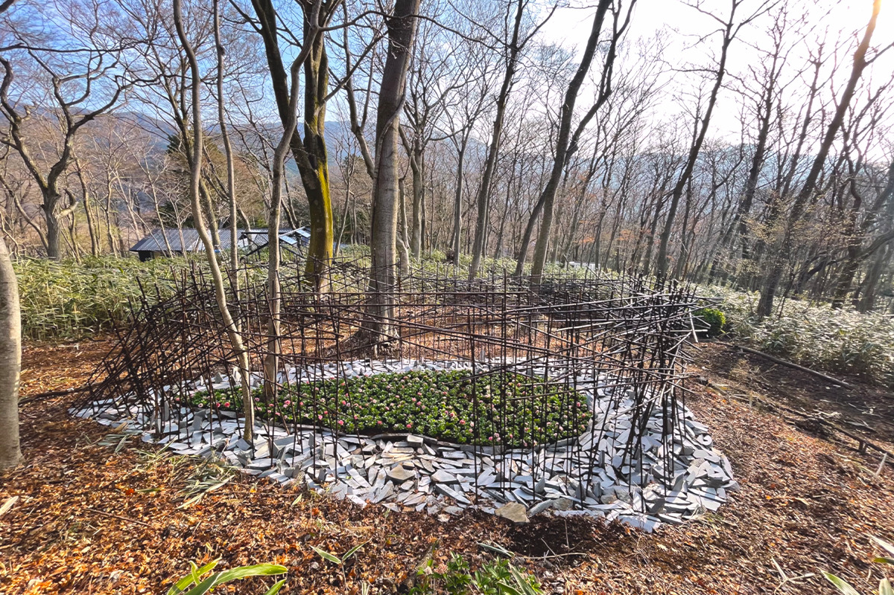
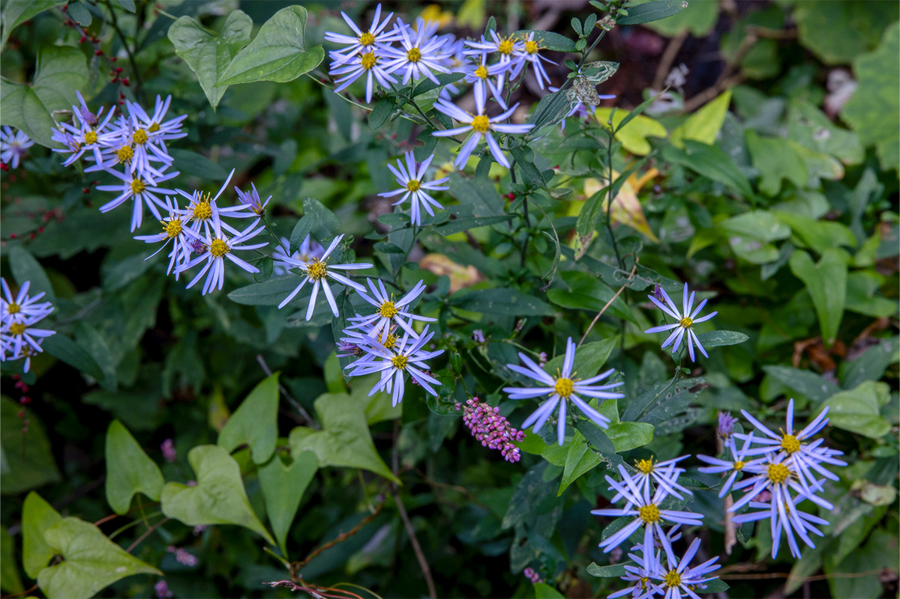
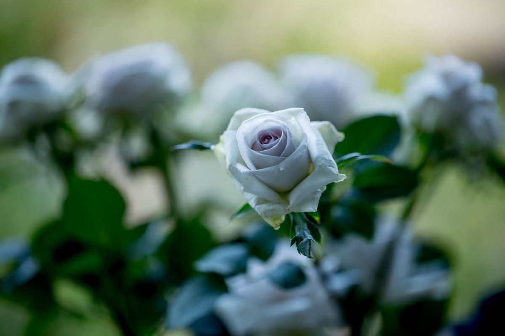
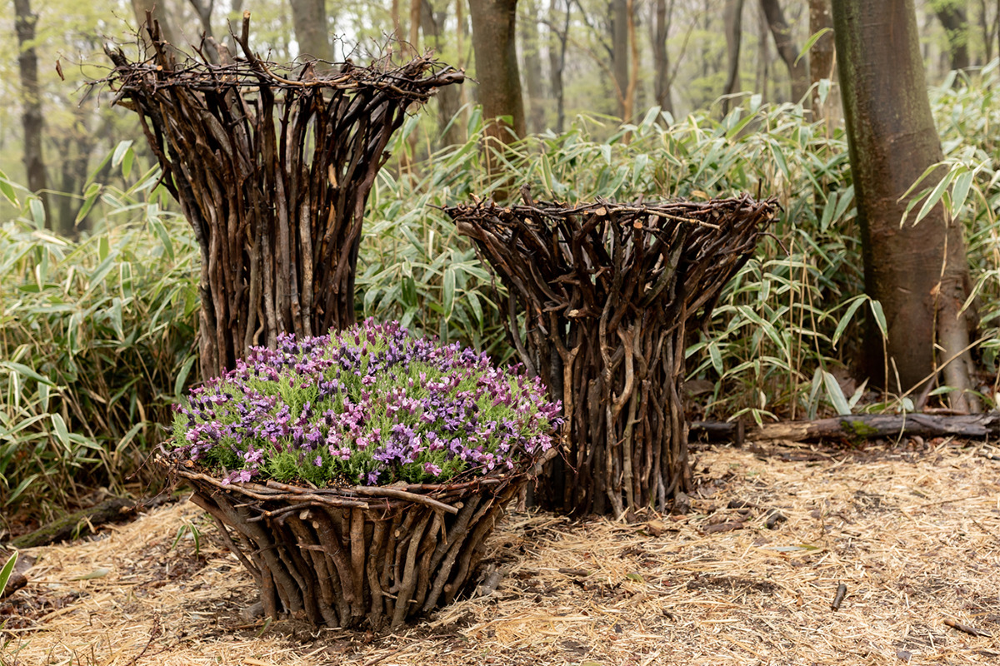
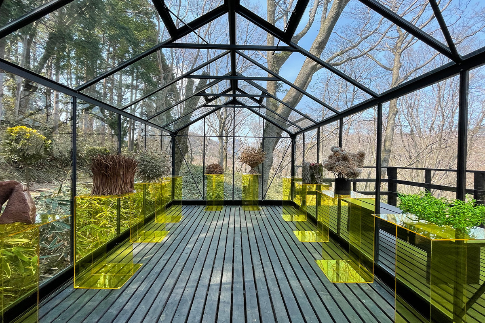
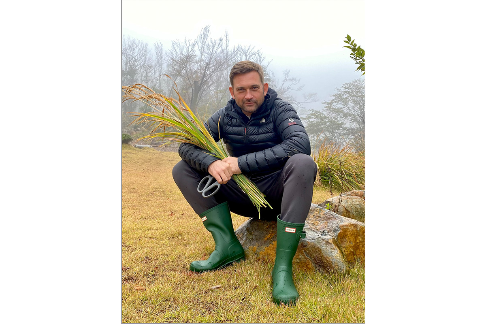
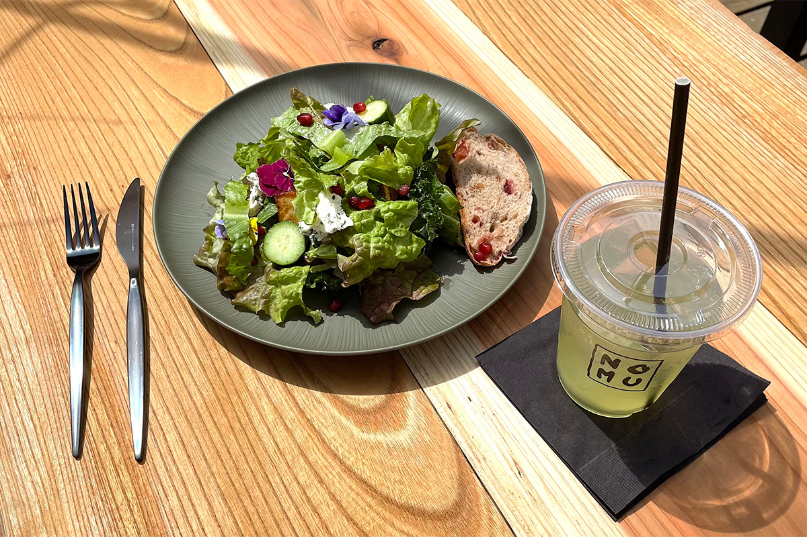
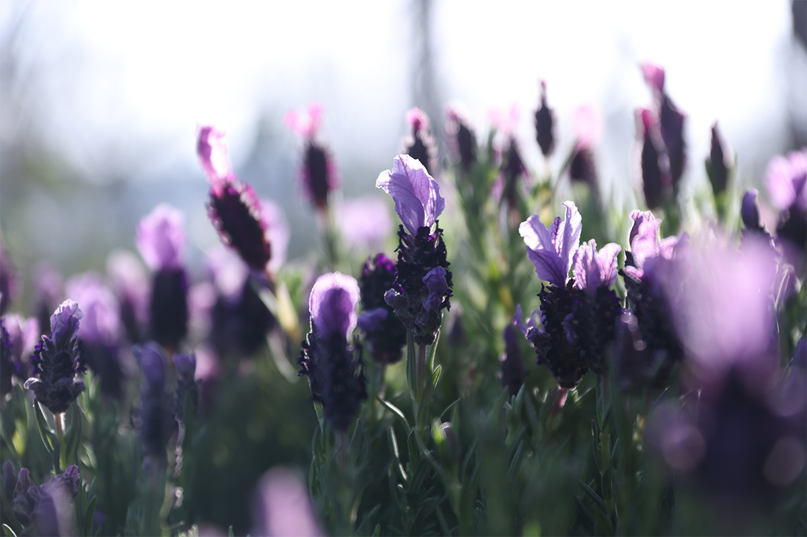

Префектура Канагава · Хаконэ, Гора · сад
Nicolai Bergmann Hakone Gardens: лесной сад флориста из Дании в горах Хаконэ

Датский флорист Николай Бергманн больше двадцати лет работает в Японии и долго искал место, где японские впечатления можно было бы превратить в нечто долговечное. Он нашёл его в горах Хаконэ: в апреле 2022 года здесь открылся его сад.
Идея
Лес вместо клумб
Nicolai Bergmann Hakone Gardens стоит в Горе, курортном районе Хаконэ. Сад полностью открылся 15 апреля 2022 года. За годы работы в Японии Николай Бергманн, флорист родом из Дании, хотел найти большую территорию, где можно воплотить то, что вдохновляет его в этой стране, и оставить это надолго. Однажды в выходной он приехал в Гору и увидел обширный участок, где лес сохранился почти нетронутым. Тогда и появилась мысль сделать здесь что-то вроде парка, в котором человек становится частью природы.

Задумано место, где люди и природа встречаются через взгляд самого Бергманна.
Сезоны
Сад, который меняется каждый раз
Природа здесь сама задаёт программу. Весной всё вокруг становится цвета сакуры, в начале лета сад окутан переливами гортензий, осенью серебрится мискантус, а зимой природа упрямо светится посреди холода. Воспринимать всё это предлагают всеми пятью чувствами: чутьё флориста и природа Хаконэ здесь отзываются друг другу.


По словам создателей, на то, чтобы сад стал законченным, уйдёт около десяти лет (так считали в 2022 году). Следить за тем, как он растёт, тоже часть удовольствия. О природе думают и в мелочах: столы для кафе сделаны вручную из деревьев, упавших на территории, а другие поваленные стволы измельчили в щепу и засыпали ею дорожки.
Искусство
Цветы в кашпо и павильоны
Вдоль главной аллеи, на западной тропе и в других уголках сада стоят цветочные инсталляции и кашпо, придуманные под особенности здешнего леса. Растения нарочно не высаживают в землю, а ставят в кашпо и корзины, поэтому каждый сезон композиции выглядят по-новому.

В павильонах и на рыночной площадке сада устраивают сезонные мероприятия, мастер-классы и выставки. Это большой холст под открытым небом, на котором при каждом визите находится что-то новое.

Слово автора
«Отношения с этим местом я растил годами»
К открытию Николай Бергманн обратился к гостям. Он рассказал, что главным в проекте с самого начала была защита природы, а сад создавали так, чтобы как можно бережнее отнестись к постоянно меняющемуся лесу на этом необычном участке.

История сада началась со встречи с прежним владельцем земли. Тот много лет искал человека, который будет бережно относиться к участку, и решил, что такой человек нашёлся.
«Я хочу создать место, где хорошо будет каждому, и вместе с тем беречь эту землю и дары природы. Очень надеюсь, что люди будут приезжать сюда не один раз, а снова и снова и полюбят природу Хаконэ и сам Хаконэ»
Николай Бергманн
Кафе
NOMU hakone: датская кухня из продуктов Хаконэ
Вместе с садом открылось кафе NOMU hakone в скандинавском стиле, где много местных материалов. Зал залит дневным светом, а тема меню звучит как «датская еда из продуктов Хаконэ». Здесь подают сэндвичи, салаты и десерты с овощами и фруктами, выращенными в Хаконэ и по соседству. Хлеб на закваске из японской муки каждый день пекут на кухне рядом с кафе. Меню меняется по сезонам.

В интерьере датская мебель Fritz Hansen и светильники Louis Poulsen: утончённая обстановка хорошо сочетается с лесом вокруг.

Nicolai Bergmann Hakone Gardens
- Адрес
- префектура Канагава, уезд Асигарасимо, Хаконэ, Гора, 1323-119
- Телефон
- +81 460-83-9087
- Часы работы
- 10:00–17:00, зимой (декабрь–февраль) 10:00–16:30, круглый год
- Выходные
- понедельник, новогодние праздники
- Цены / Вход
- взрослые 1500 иен при онлайн-бронировании (1800 иен на месте), студенты 1100 иен (1400 иен на месте), школьники младших классов и младше бесплатно; цены с налогом; оплата на территории только картой или электронными деньгами; парковка 500 иен (22 места)
- Сайт
- hakonegardens.jp